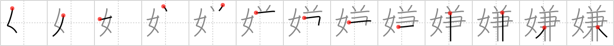

嫌
← →
dislike

Reading:
On-Yomi: ケン、ゲン — Kun-Yomi: きら.う、きら.い、いや
Heisig story:
Woman . . . concurrently.
Koohii stories:
1) [Stormchild] 11-4-2007(293): Naturally, if you're dating more than one woman concurrently, they will certainly dislike each other!
2) [bihzad] 18-4-2008(84): Attempting to court two women concurrently will make them both dislike you.
3) [zanzibar] 31-5-2009(12): WOMEN dislike CASANOVA because he dates more than one concurrently.
4) [Raichu] 14-4-2007(11): She'll dislike you if you have another woman concurrently.
5) [blaked569] 4-3-2009(5): Women dislike men who date other women concurrently.